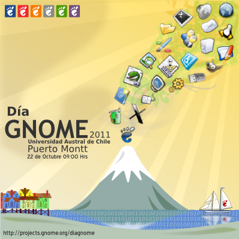

¡Únete!


¡Únete!



Siguiendo la filosofía del proyecto GNOME, Día GNOME es un espacio libre, horizontal y accesible para conocer a otros entusiastas y desarrolladores, compartir ideas, quejas, proyectos, todo en un ambiente de amistad y buena onda.
Este año 2011, el evento se llevará a cabo el día sábado 22 de octubre en la Universidad Austral en la sede de Puerto Montt, enmarcado dentro del Encuentro Linux 2011, celebrado los días 20, 21 y 22.
Hemos puesto a tu disposición algunas de las presentaciones que se expusieron durante el evento, para que puedas conocer más sobre qué es GNOME y cómo puedes participar si te interesa. Ir a sección Descargas.
Suscríbete a la Lista de correo para conocer las actividades o apoyar al proyecto GNOME Chile.
Mantente informado respecto del evento Día GNOME a través de
 o de
o de

Copyright © 2010 The GNOME Project
Sitio web por Gabriel Lucero